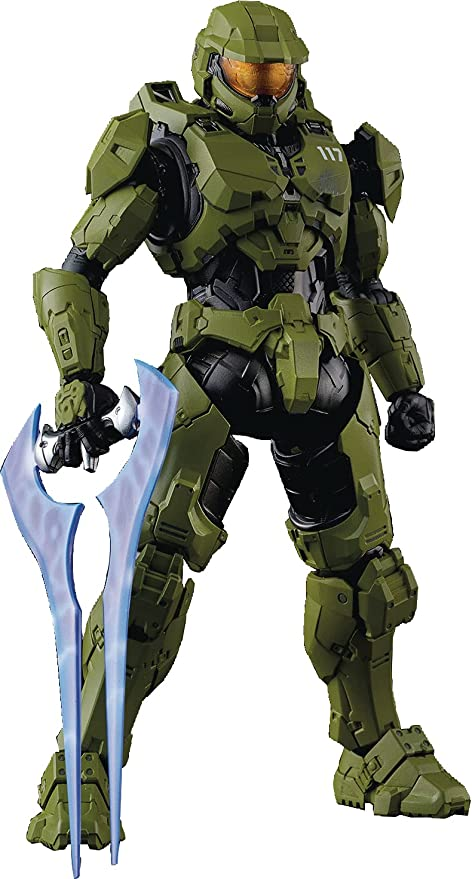

El Suboficial Jefe Maestro John-117, [1] conocido como Jefe Maestro (Master Chief en inglés), es un SPARTAN-II de la Armada del UNSC y el principal protagonista en el Universo de Halo. Ha servido como uno de los personajes más importantes en la Guerra Covenant y tiene cerca de 30 años de servicio activo militar, además de poseer todas las condecoraciones que el UNSC ofrece, excepto la de "Prisionero de Guerra".
Apariencia
